Graduation Show
Brandon
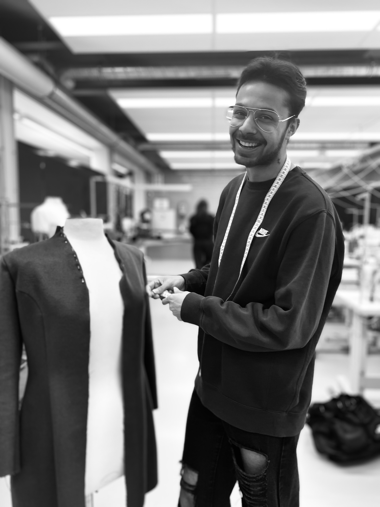Deze collectie is een artistieke en rebelse verkenning van mentale gezondheid en de maatschappelijke misvattingen die daar vaak mee gepaard gaan. Elk kledingstuk draagt de sporen van innerlijke strijd en chaos maar ook van kracht, intelligentie en creativiteit. In plaats van de duistere kant te verbergen, wordt deze omarmd als een essentieel onderdeel van het mens-zijn.
Maud
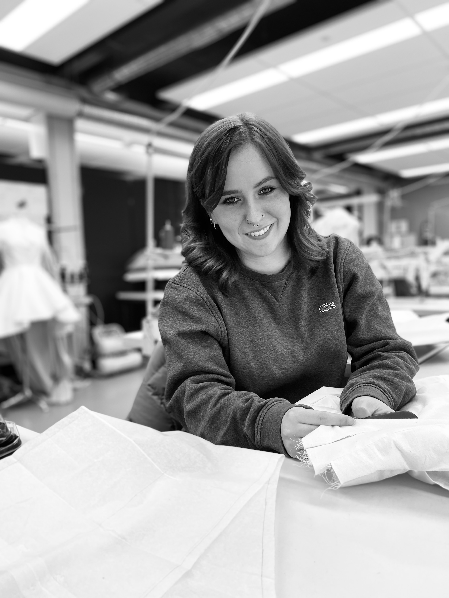Mijn idee voor mijn collectie is om surrealisme naar boven te halen in de kleding, maar ook het ook vrouwelijk te houden. Ik houd zelf van het idee dat dingen net iets te ver gaan voor sommige mensen dus net buiten de lijntjes te kleuren. Dit is ook te zien in mijn concept boord. Voor vormen en silhouetten ben ik gegaan voor aan sluitende kleding om de vormen van het lichaam te accentueren en ook heb ik er voor gekozen om het skelet weer naar boven te laten komen, omdat dit mij altijd aanspreekt en toch een beetje buiten de lijntjes te gaan.
Olivier
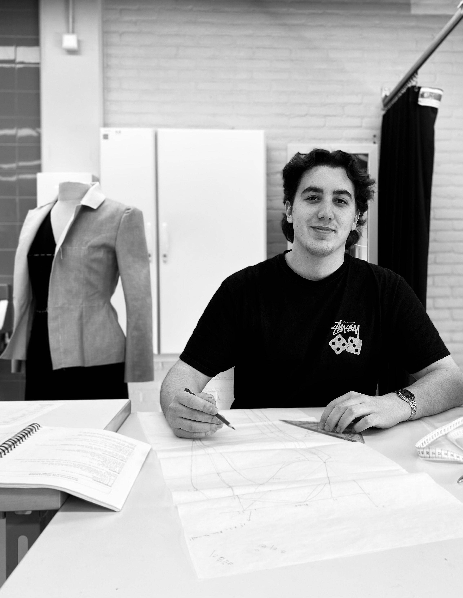Ik heb mijn collectie gebaseerd op het nostalgische gevoel dat ik kreeg van mijn gekozen modehuis. Het gevoel kwam vooral door het gebruik van de kleuren, motiefjes en het model van zijn kledingstukken. Vandaar heb ik oude foto’s gebruikt en ben er zelf voor gegaan om stoffen te gebruiken die een oud gevoel geven.
Sanne
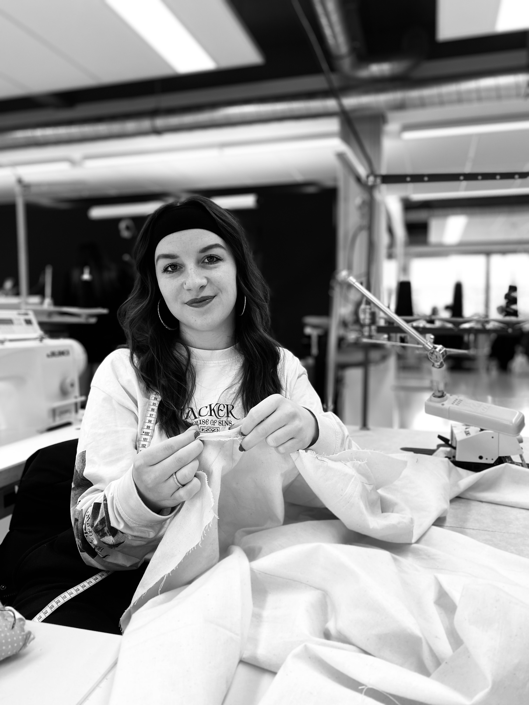Street with a touch of weirdness Ik heb mijn collectie deze naam gegeven omdat het voornamelijk streetwear/urban kleding is en omdat er meer ongebruikelijke prints en fournituren zijn gebruikt zoals teddyberen op een jas en graffiti op kleding. Ik wil met mijn collectie laten zien dat je uit je comfort zone mag gaan en dat je daar door een inspiratie kan zijn voor de mensen om jou heen. Ben de inspiratie en laat inspireren!
Izis
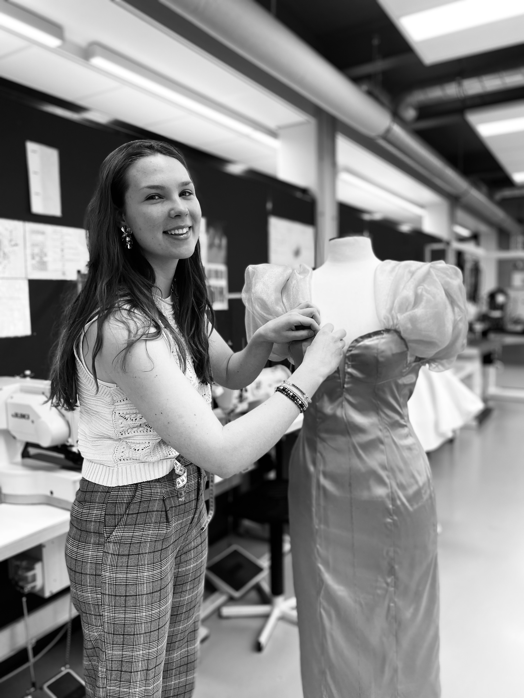"Once we'll escape from the reality" Een fase in een menselijk leven, waarbij ontsnapping uit het dagelijkse leven even nodig is om jezelf te herontdekken. Door een tijdje in een magische wereld te stappen waar je jezelf kan zijn en de volledige rust kan pakken, krijg je de kans om de juiste keuzes te maken voor de toekomst.
Vy
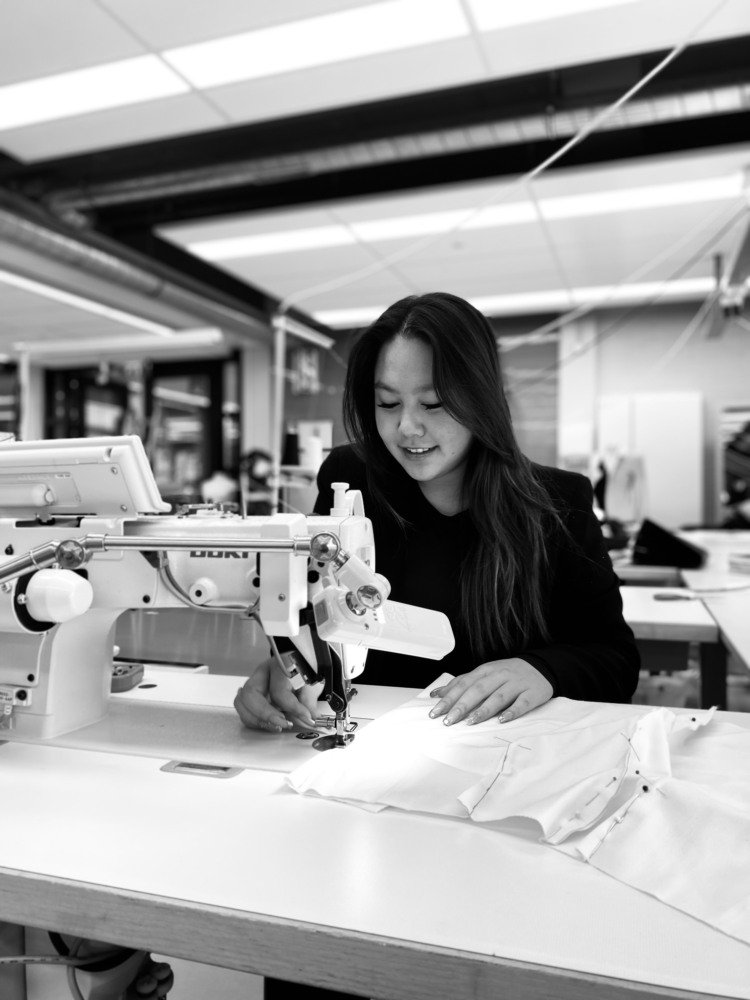Het concept van mijn collectie is "Bloom in your own way, every flower had its own." Daarmee wil ik vertellen dat je net zoals bloemen op verschillende manier bloeit, afhankelijk van de soort omgeving, omstandigheden en ontwikkeling. Net als een bloem groei je naar een unieke pad in het leven.
Luna
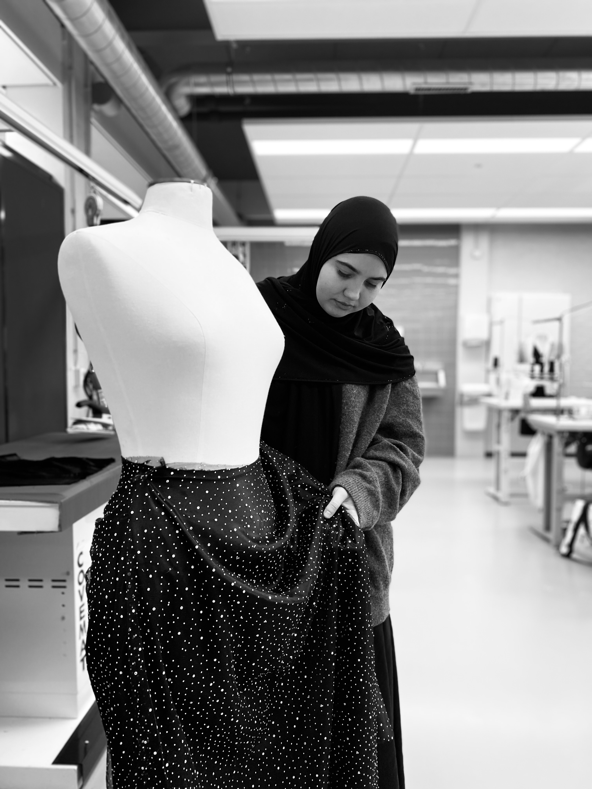Deze collectie draait om de balans tussen licht en donker, sterk en zacht. Wit staat voor rust en hoop, zwart voor diepte en kracht. Door contrasten in stoffen, vormen en structuren ontstaat een harmonie tussen tegenstellingen.
Senna
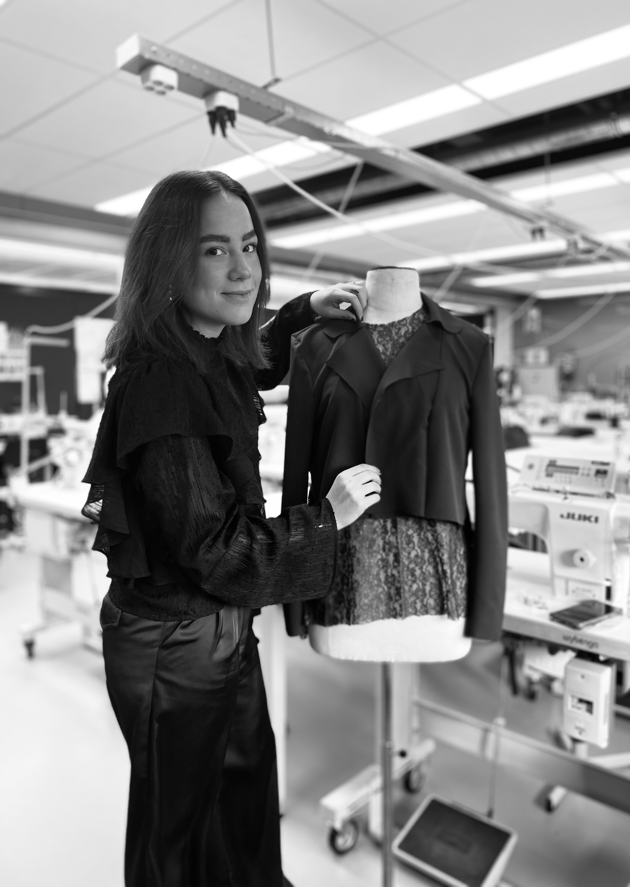Ik ben Senna 21 jaar, en ik ben trots om mijn Shape Collectie met jullie te delen. Deze collectie draait volledig om bodypositivity – het vieren van elk lichaam, in elke vorm, maat en kleur. Door het gebruik van fijn kant wil ik laten zien dat álle lichamen er mogen zijn. Ieder detail is ontworpen met liefde en respect voor diversiteit, zodat jij je gezien en krachtig voelt, precies zoals je bent.
Lise
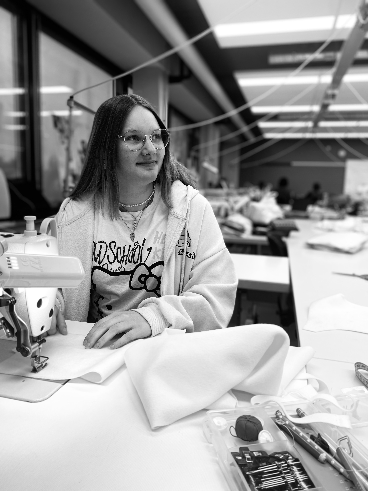Vintage dollhouse is de naam van mijn collectie. "Bij deze collectie ben ik gegaan voor een elegante vintage look, geïnspireerd door porseleinen poppen en hun tijdloze charme."
Sarah
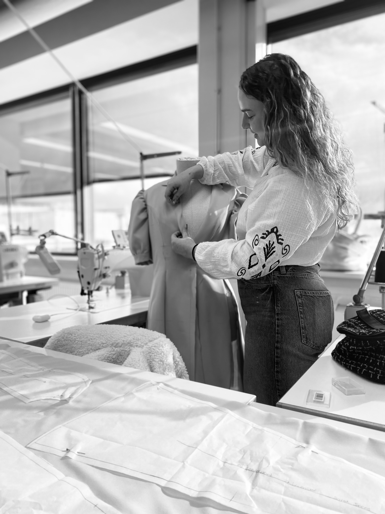Mijn collectie heet shapes of time, ik wil de kenmerken van vroeger in een modern jasje gaan steken. Met mijn collectie wil ik de vormen van vroeger laten terug komen in mijn kledingstukken en dat mijn kleding een klassiek en sierlijk gevoel uitstralen.
May-Zaan
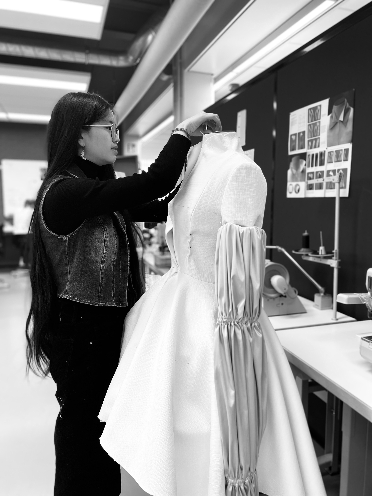"To the future and past" De collectie "To the future and Past" is gebaseerd op traditionele/culturele kleding van China met een fusion van modern EGL/Lolita kledingstyle van Japan. In mijn collectie laat ik een andere een ander beeld zien van de Chinese cultuur dat mensen weinig of geen van afweten. Deze kledingstukken worden geïnspireerd van de Chinese Hanfu en Qipao met erbij de lolita jurken.
Vera
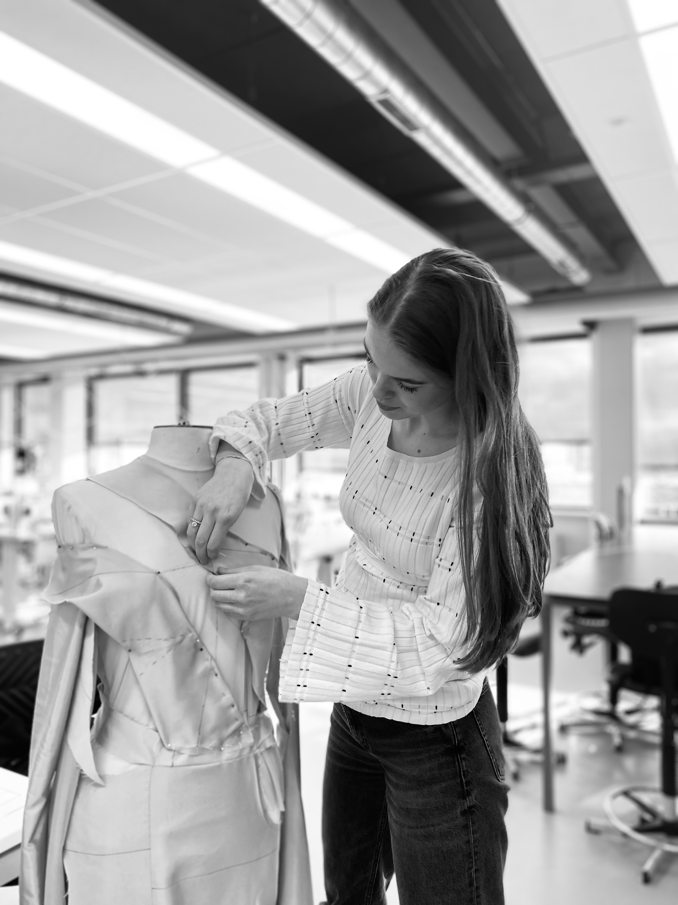Mijn collectie heet 5 stages of grief, ik geef vorm in mijn collectie de emoties die veel mensen ervaren als ze door een periode van rauw gaan. Als ze iemand verliezen die dierbaar voor ze zijn. De emoties die je gaat zien zijn: boosheid, verdriet, angst, schok & ongeloof en acceptatie.
Nisa
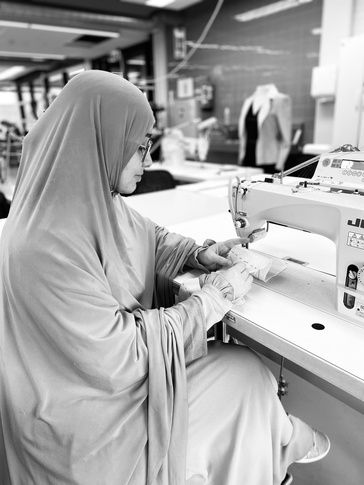Met een wereld vol overproductie en textielafval brengt deze collectie een bewuste benadering van mode, waar tijdloze ontwerpen en duurzame stoffen centraal staan. Door minimalisme en doordachte materialen te combineren, laat deze collectie zien dat stijl en verantwoordelijkheid hand in hand kunnen gaan.